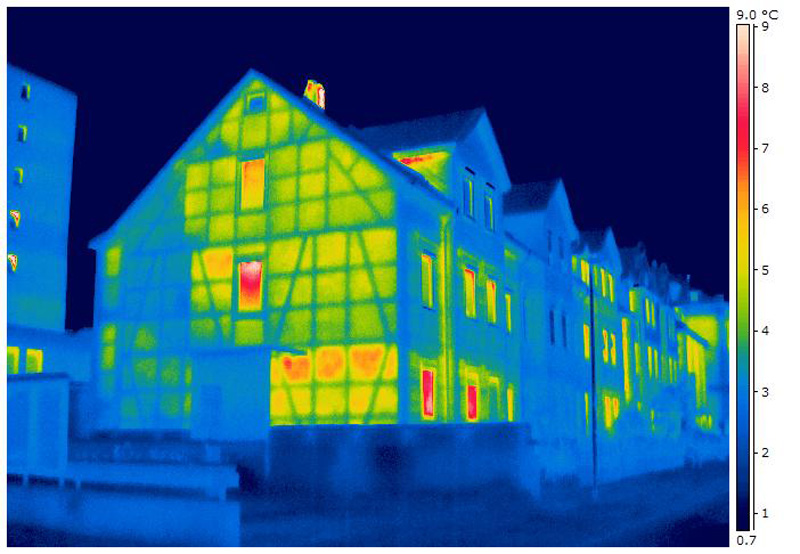
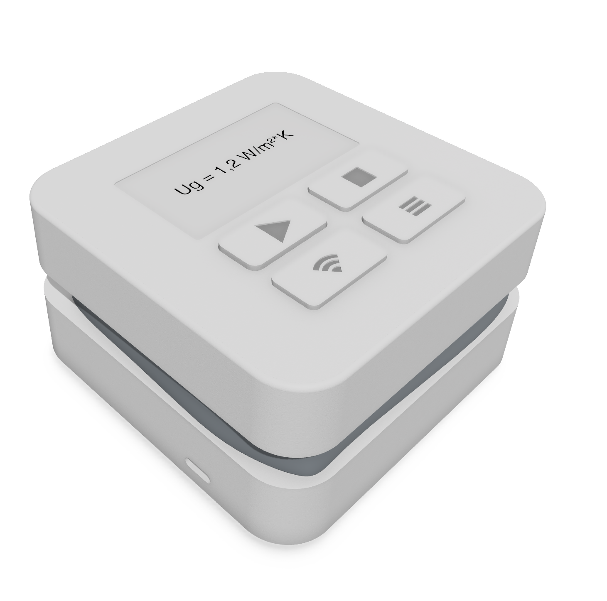
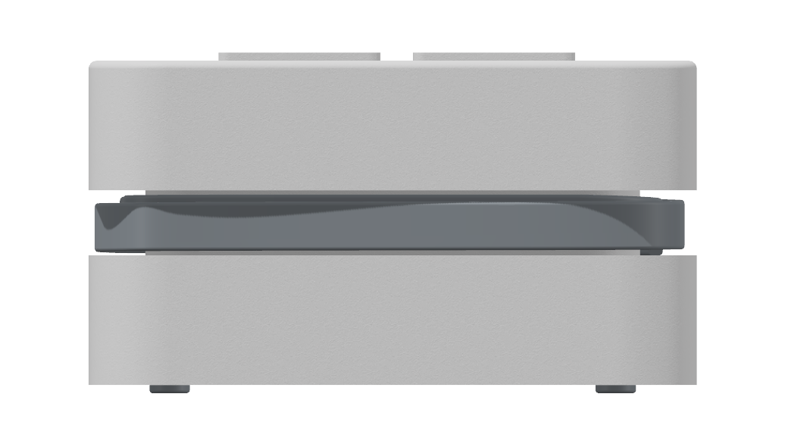
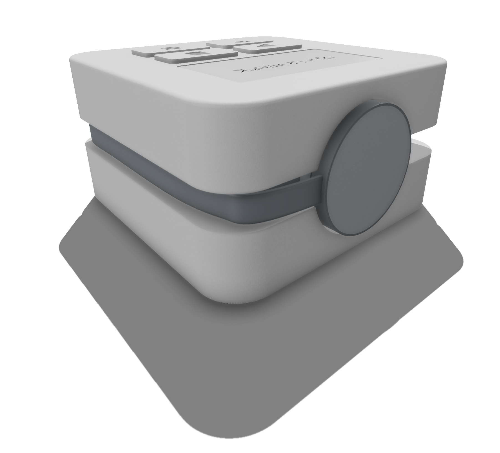

Wissen statt schätzen.
Messen Sie den wahren U-Wert.
Das U-Check ThermoMetric liefert präzise Ug-Werte direkt vor Ort – einfach, schnell und kosteneffizient. Für fundierte Sanierungsentscheidungen und echte Energieeinsparung.
Jetzt Interesse bekunden Live Simulation ansehenDas Problem: Ungewissheit kostet bares Geld
Grobe Schätzungen statt Fakten
Der U-Wert eines Fensters wird oft nur anhand des Baujahrs geschätzt oder ist unbekannt. Alterung, wie der unbemerkte Verlust der Edelgasfüllung im Scheibenzwischenraum, kann den realen Wert jedoch drastisch verschlechtern – bis zur Verdreifachung des Wärmeverlusts!
Teuer, komplex, unpraktisch
Bestehende Messgeräte sind teuer (€2.500 - €5.000+), oft unhandlich und erfordern lange, stabile Messbedingungen (oft nachts). Das macht den breiten Einsatz unwirtschaftlich und für Laien unrealistisch.
Fehlende Daten, falsche Entscheidungen
Ohne genaue Messung besteht die Gefahr, intakte Fenster unnötig auszutauschen oder ineffiziente "Energielöcher" fälschlicherweise zu belassen. Eine fundierte, wirtschaftliche Sanierungsplanung ist kaum möglich.

Wärmeverluste (rot/gelb) an Fenstern machen einen großen Teil der Heizkosten aus.Die Lösung: U-Check ThermoMetric

Prototyp des U-Check ThermoMetric.Präzise & Bezahlbar
ThermoMetric misst den Ug-Wert (Wärmedurchgangskoeffizient der Verglasung) präzise und zuverlässig direkt am Fenster. Entwickelt mit Fokus auf kosteneffiziente, aber genaue Komponenten, zielen wir auf einen Preis von nur ca. €300 - €600 – ein Bruchteil der Kosten etablierter Systeme.
Kompakt & Benutzerfreundlich
Das handliche Gerät wird einfach an der Scheibe befestigt. Der gemessene U-Wert wird nach kurzer Zeit auf dem integrierten Display und via WLAN in einer übersichtlichen Weboberfläche angezeigt – zugänglich über Smartphone, Tablet oder Laptop.
Flexibel für Alle
Ideal für Energieberater, Fensterbauer, Architekten und Sachverständige, die ihren Service erweitern wollen. Aber auch perfekt für Bauherren, Hausverwaltungen, Vermieter oder Genossenschaften – dank Kauf- oder attraktivem Mietmodell.
Mehr zum Gerät Jetzt Interesse bekundenSind Ihre Fenster noch wirklich dicht?
Mit den Jahren kann das isolierende Edelgas (z.B. Argon) aus dem Scheibenzwischenraum entweichen. Das verschlechtert die Dämmwirkung erheblich! Simulieren Sie hier (vereinfacht für 2-fach Glas), wie sich der U-Wert ändert und was das für Ihre Heizkosten bedeutet:
Wärmefluss-Visualisierung
Geringer Wärmefluss
Gasverlust simulieren:
Ein Fenster mit dem aktuell simulierten Ug-Wert von 1.1 spart gegenüber einem Fenster mit komplettem Gasverlust (Ug 2.7) bei [XX] m² Fensterfläche pro Jahr ca. [XX] €! Berechnung: Ersparnis [€/a] ≈ (Ug,schlecht - Ug,aktuell) * Fläche [m²] * Heizgradtage [Kd/a] * 24 [h/d] / 1000 * Energiepreis [€/kWh].
Annahmen: Fläche=25 m², Heizgradtage=3500 Kd/a, Energiepreis=12 ct/kWh.
Unsicherheit über den wahren Zustand Ihrer Fenster kostet bares Geld durch unnötige Heizkosten oder Fehlinvestitionen.
U-Check ThermoMetric schafft Klarheit.
Wie ThermoMetric misst
Das Prinzip: Wärme & Temperatur
ThermoMetric misst drei Schlüsselwerte direkt an der Glasscheibe, um den Wärmedurchgang zu quantifizieren:
- Tsi: Oberflächentemperatur innen
- Tse: Oberflächentemperatur außen
- q: Wärmestromdichte durch die Scheibe (Wärmemenge pro Fläche)
Dafür nutzen wir präzise, kalibrierte digitale Temperatursensoren (DS18B20) für Tsi und Tse. Der Wärmestrom 'q' wird über ein differenzielles Temperaturmessverfahren mittels eines weiteren Sensors und einer definierten thermischen Barriere gemessen (vereinfacht gesagt: ein bekanntes, dünnes Material zwischen zwei Temperatursensoren).
Die Berechnung
Aus diesen live gemessenen Werten und den physikalisch bekannten Wärmeübergangswiderständen der Luft an den Glasoberflächen (rsi innen und rse außen, die leicht von den Lufttemperaturen abhängen, aber gut normiert sind) berechnet der integrierte ESP32-Mikrocontroller den Ug-Wert nach der fundamentalen Formel:
Ug = 1 / (Rsi + RGlas + Rse)
Wobei RGlas = (Tsi - Tse) / q der gemessene Widerstand der Verglasung ist.
Das Ergebnis (der Ug-Wert) wird nach Erreichen stabiler Bedingungen direkt auf dem Gerätedisplay und in der verbundenen Web-App angezeigt.
Ein Blick auf das ThermoMetric
Kompakt, robust und bereit für den Einsatz. Das Gehäuse wird im 3D-Druck gefertigt, die Elektronik basiert auf einem leistungsfähigen ESP32 Mikrocontroller.
- Integriertes OLED-Display zur direkten Anzeige
- WLAN-Modul für Web-Interface & Datenexport (CSV)
- Magnetische Halterung für einfache Befestigung
- Stromversorgung via USB-C (Powerbank oder Netzteil)
- Kompakte Maße: ca. 10 x 6 x 4 cm

Aktueller Prototyp (U2050). Finale Produktbilder folgen.Interaktive 3D Ansicht
Erkunden Sie das ThermoMetric Modell. (Laden des Modells kann kurz dauern).
Ihre Vorteile mit ThermoMetric
- Klarheit statt Schätzung: Messen Sie den echten Ug-Wert Ihrer Fenster und treffen Sie fundierte Sanierungsentscheidungen. Wissen, wo sich ein Austausch wirklich lohnt!
- Massiv günstiger: Geplanter Verkaufspreis von ca. €300-€600 – sparen Sie tausende Euro im Vergleich zu etablierten Labormessgeräten oder teuren Profi-Tools.
- Einfachste Bedienung: Anbringen, einschalten, kurz warten, Wert ablesen. Intuitive Web-Oberfläche auf jedem WLAN-fähigen Gerät (Smartphone, Tablet, Laptop). Kein Expertenwissen nötig.
- Schnelle Ergebnisse vor Ort: Der U-Wert wird direkt am Objekt berechnet und angezeigt – keine langwierigen Nachtmessungen erforderlich (abhängig von Temperaturdifferenz).
- Mobil & Flexibel: Kompaktes Design, Betrieb mit Standard-USB-C-Powerbank möglich. Datenexport als CSV für Dokumentation oder weitere Analysen.
- Mietmodell verfügbar: Testen oder nutzen Sie ThermoMetric flexibel für einzelne Projekte, ohne hohe Anfangsinvestition. (Siehe unten)
- Wertvolles Tool für Profis: Energieberater, Fensterbauer, Architekten und Gutachter können ihr Angebot erweitern, sich differenzieren und präzisere Aussagen treffen.
Flexibel nutzen: Kaufen oder Mieten
ThermoMetric Mieten
Sie brauchen das Gerät nur für ein spezifisches Bauprojekt, zur Überprüfung Ihrer Mietwohnung oder möchten es erstmal ausgiebig testen? Unser attraktives Mietmodell macht es möglich!
Einfach online für den gewünschten Zeitraum buchen (bald verfügbar!), Messungen durchführen und bequem im mitgelieferten, vorfrankierten Karton zurücksenden. Ideal für Hausbesitzer, Mieter und sporadische Nutzer.
Interesse am Mietmodell bekundenFördermittel & Nachweise
Wussten Sie schon? Genaue U-Wert-Messungen können entscheidend sein, um den Erfolg von Sanierungsmaßnahmen (z.B. Fenstertausch) nachzuweisen. Dies kann relevant für die Beantragung oder den Nachweis von Fördermitteln (z.B. von BAFA oder KfW) sein.
ThermoMetric liefert Ihnen die nötigen, objektiven Daten für Ihre Dokumentation.
*Bitte informieren Sie sich stets über die aktuell gültigen Förderbedingungen und Anforderungen bei den jeweiligen Stellen. Dies stellt keine Förderberatung dar.
Das Team dahinter
Entwickelt aus der Praxis für die Praxis – mit Leidenschaft für Energieeffizienz und zugängliche Messtechnik.

Christoph Samuel Hauser
M.Sc. Gebäudephysik (HFT Stuttgart)
Konzeption, Entwicklung & Prototypenbau

Unterstützende Partner
Beratung im Bereich Embedded Systems, Elektronik & Software
Haben Sie Fragen oder möchten Sie das Projekt unterstützen?
Kontakt aufnehmenSeien Sie unter den Ersten!
U-Check ThermoMetric befindet sich in der finalen Entwicklungsphase und wird bald verfügbar sein (Kauf & Miete). Hinterlassen Sie Ihre E-Mail-Adresse, und wir informieren Sie unverbindlich über den Verkaufsstart, exklusive Vorbestell-Aktionen und Neuigkeiten.
Ihre Daten werden nur für die Benachrichtigung zum ThermoMetric verwendet. Kein Spam, keine Weitergabe. Versprochen.